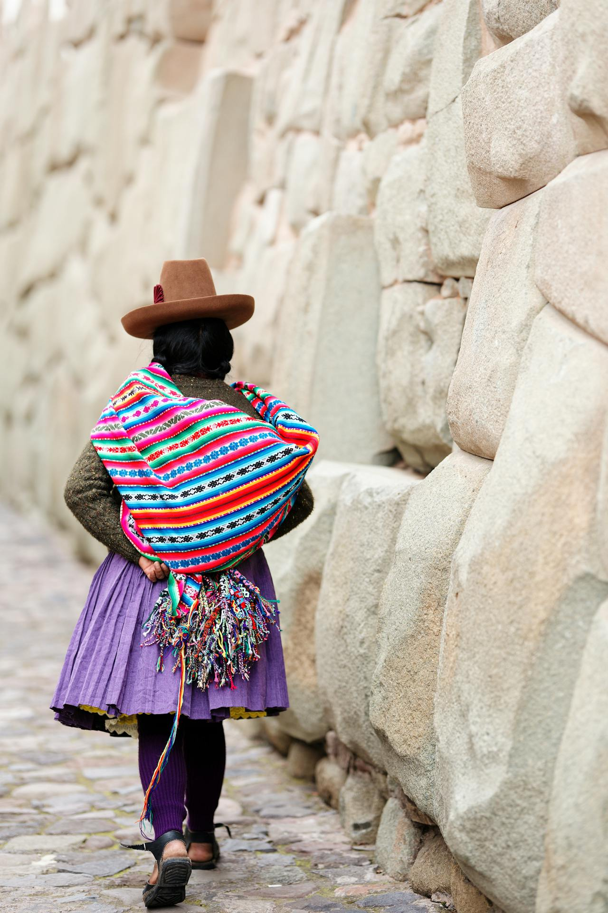
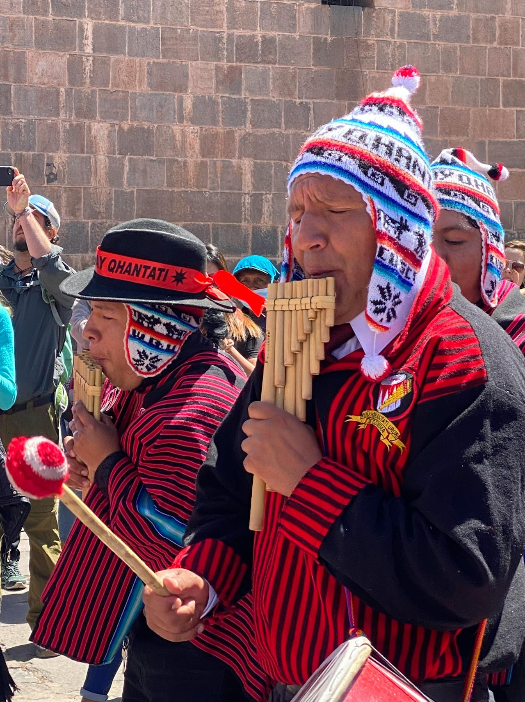
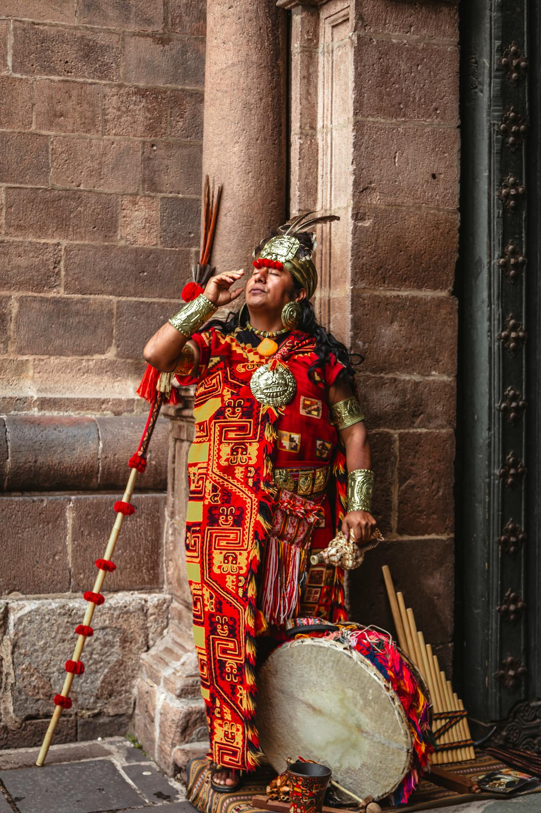

Celebrando el Día del Indio
Honrando la riqueza cultural y la historia de los pueblos indígenas, con un especial énfasis en la cultura Quechua.
Filtros rápidos
Sobre el Día del Indio
El Día del Indio es una fecha significativa que celebra la cultura, tradiciones y derechos de los pueblos indígenas. En este día, se realizan diversas actividades para concienciar sobre la importancia de preservar y promover la herencia cultural indígena.
Enfoque en la etnia Quechua
La etnia Quechua es una de las más representativas de los pueblos indígenas de América del Sur. Su rica cultura, que incluye tradiciones, lengua y vestimenta, es un símbolo de resistencia y orgullo. En este día, se realizan actividades para promover y preservar la cultura Quechua, así como para visibilizar las problemáticas que enfrenta esta comunidad.

Textiles Quechuas
Patrones y colores vibrantes que cuentan historias.

Música Andina
Melodías ancestrales que conectan con la tierra.

Cosmovisión Quechua
Una visión del mundo en armonía con la naturaleza.